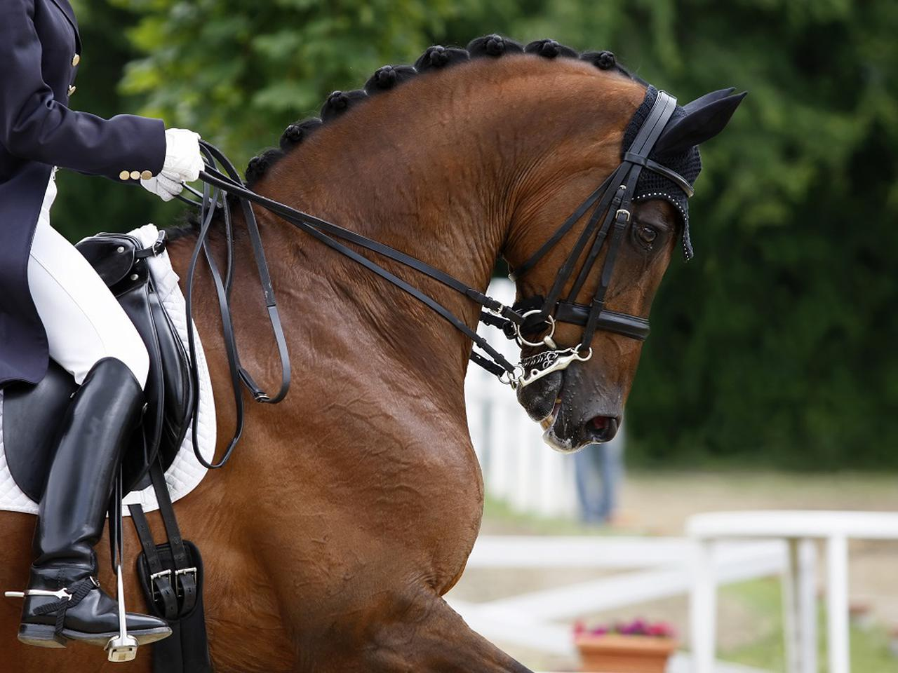

Ujeżdżenie
Na zawodach ujeżdżeniowych zwraca się czy wszystkie punkty z piramidy ujeżdżeniowej są spełnione, na postawę jeźdźca i jego sposób prowadzenia konia oraz na dynamikę chodów konia i czy głową nie wychodzi w żadną stronę poza pion. Klasy ujeżdżeniowe oznacza się dużymi literami, w kolejności od najłatwiejszej: D, L, P, N, C, CC. W wyższych klasach wymagany jest kapelusza zamiast kasku, brak owijek lub ochraniaczy, jeździec musi być ubrany w białe bryczesy i frak, a koń musi przyjąć najmocniejsze wędzidło, munsztuk. Jest on połączeniem dwóch wędzideł, jednego normalnego, oraz drugiego, które działa na zasadzie dźwigni, a pod pyskiem konia przeciągnięty jest łańcuszek, który zaciska się wzmacniając jeszcze działania dźwigni. Jeździec musi mieć bardzo stabilną i delikatną rękę, by móc poprawnie używać munsztuku. Na zawodach ujeżdżeniowych jeździ się programy z góry ustalone. Każda klasa ma swoje 5 programów. Są one rozpisane na czworoboku. Istnieją dwa rodzaje czworoboków; mały i duży. Mały ma wymiary 20 m x 40 m i składa się z liter A, K, E, H, C, M, B, F, X, D, G. Natomiast duży czworobok ma wymiary 20 m x 60 m, i składa się z liter A, K, V, E, S, H, C, M, R, B, P, F, X, D, G, I, L. Klasy od P w górę jeździ się na dużym czworoboku, a reszte na małym. |
 |